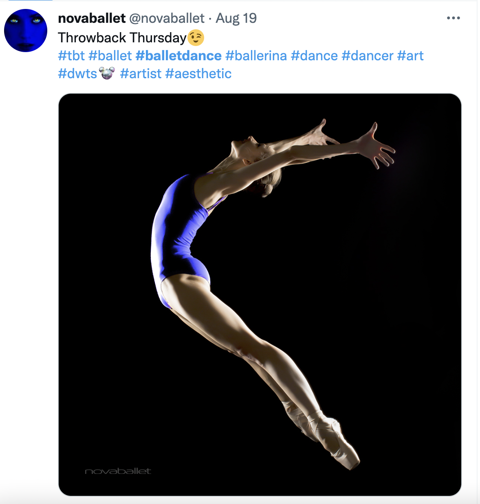
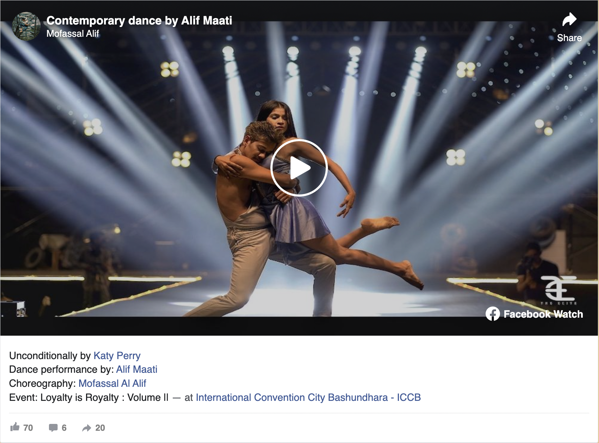
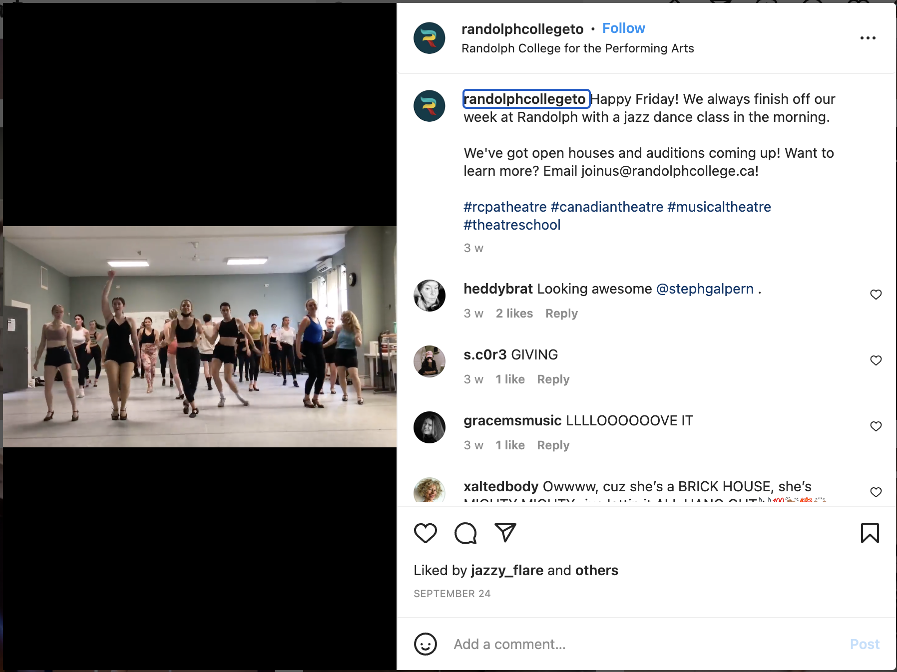

| Original | Type | Thumbnails | How Altered or Justification |
|---|---|---|---|
| The 1st image on photogallery.html | Graphic | Resized the picture to be suitable. | |
| The 2nd image on photogallery.html | Graphic | Resized the picture to be suitable. | |
| The 3rd image on photogallery.html | Graphic | Resized the picture to be suitable. | |
| The 4th image on photogallery.html | Graphic | Resized the picture to be suitable. | |
| The 5th image on photogallery.html | Graphic | Resized the picture to be suitable. | |
| The 6th image on photogallery.html | Graphic | Crop the picture to be suitable. | |
| The 7th image on photogallery.html | Graphic |  |
Resized the picture to be suitable. |
| The 8th image on photogallery.html | Graphic |  |
Resized the picture to be suitable. |
| The 9th image on photogallery.html | Graphic | Resized the picture to be suitable. | |
| The 10th image on photogallery.html | Graphic |  |
Resized the picture to be suitable. |
| The 11th image on photogallery.html | Graphic |  |
Resized the picture to be suitable. |
| The 1st image on imagemap.html | Graphic | Modified the picture and combined with others. | |
| The 2nd image on imagemap.html | Graphic | Modified the picture and combined with others. | |
| The 3rd image on imagemap.html | Graphic | Modified the picture and combined with others. | |
| The 1st image on introduction.html | Graphic |  |
Crop picture to make it smaller. |
| The 2nd image on introduction.html | Graphic |  |
Crop picture to make it smaller. |
| The 3rd image on introduction.html | Graphic |  |
Crop picture to make it smaller. |
| The 4th image on introduction.html | Graphic |  |
Crop picture to make it smaller. |
| The 1st image on socialfeed.html | ScreenShot |  | Resized picture to make it smaller. |
| The 1st video on socialfeed.html | Video |  | Resized picture to make it smaller. |
| The 2nd video on socialfeed.html | Video |  |
Resized picture to make it smaller. |
| The 3rd video on socialfeed.html | Video | Resized picture to make it smaller. | |
| The 2nd image on socialfeed.html | ScreenShot |  | Resized picture to make it smaller. |
| The 1st image on reflection.html | Graphic |  |
Crop picture to make it smaller. |
| The 2nd image on reflection.html | Graphic |  |
Crop picture to make it smaller. |
| The 3rd image on reflection.html | Graphic |  |
Crop picture to make it smaller. |